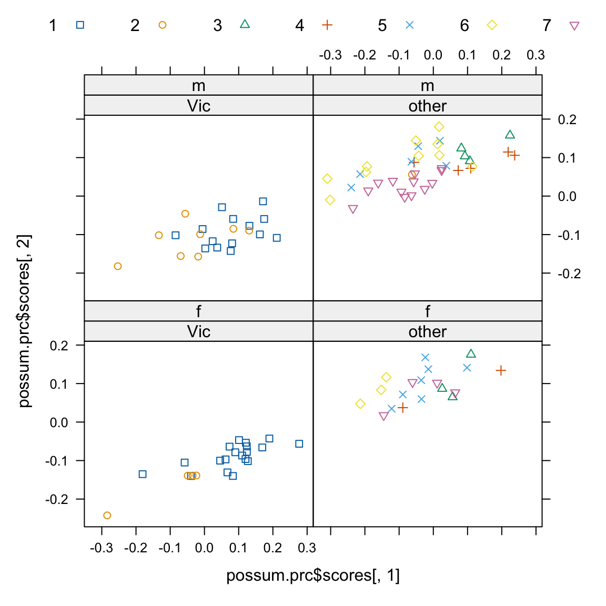
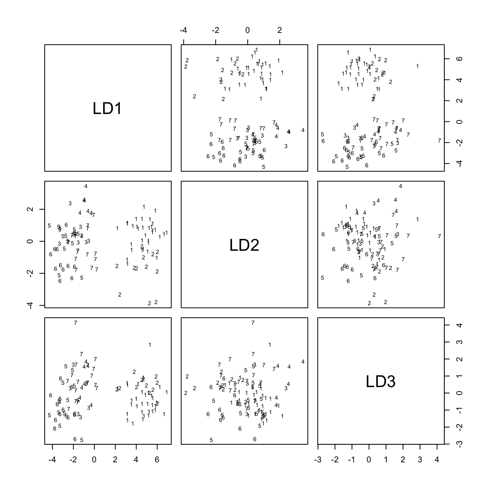

pairs(possum[,6:14], col=palette()[as.integer(possum$sex)])
pairs(possum[,6:14], col=palette()[as.integer(possum$site)])
here<-!is.na(possum$footlgth) # We need to exclude missing values
print(sum(!here)) # Check how many values are missing7 Multivariate Methods
7.1 Multivariate EDA, and Principal Components Analysis
Principal components analysis is often a useful exploratory tool for multivariate data. The idea is to replace the initial set of variables by a small number of “principal components” that together may explain most of the variation in the data. The first principal component is the component (linear combination of the initial variables) that explains the greatest part of the variation. The second principal component is the component that, among linear combinations of the variables that are uncorrelated with the first principal component, explains the greatest part of the remaining variation, and so on.
The measure of variation used is the sum of the variances of variables, perhaps after scaling so that they each have variance one. An analysis that works with the unscaled variables, and hence with the variance-covariance matrix, gives a greater weight to variables that have a large variance. The common alternative –- scaling variables so that they each have variance equal to one – is equivalent to working with the correlation matrix.
With biological measurement data, it is usually desirable to begin by taking logarithms. The standard deviations then measure the logarithm of relative change. Because all variables measure much the same quantity (i.e. relative variability), and because the standard deviations are typically fairly comparable, scaling to give equal variances is unnecessary.
The data set DAAG::possum has nine morphometric measurements on each of 102 mountain brushtail possums, trapped at seven sites from southern Victoria to central Queensland . It is good practice to begin by examining relevant scatterplot matrices. This may draw attention to gross errors in the data. A plot in which the sites and/or the sexes are identified will draw attention to any very strong structure in the data. For example one site may be quite different from the others, for some or all of the variables. Taking logarithms of these data does not make much difference to the appearance of the plots. This is because the ratio of largest to smallest value is relatively small, never more than 1.6, for all variables.
Scatterplot matrix possibilities include:
We now look (Figure 7.1) at the view of the data that comes from plotting the second principal component against the first:

Code is:
possum <- DAAG::possum
here <- !is.na(possum$footlgth) # We need to exclude missing values
possum.prc <- princomp(log(possum[here,6:14])) # Principal components
# Print scores on second pc versus scores on first pc,
# by populations and sex, identified by site
library(lattice)
xyplot(possum.prc$scores[,2] ~ possum.prc$scores[,1]|
possum$Pop[here]+possum$sex[here], groups=possum$site,
par.settings=simpleTheme(pch=0:6), auto.key=list(columns=7))7.2 Cluster Analysis
Cluster analysis is a form of unsupervised classification, ‘unsupervised’ because the clusters are not known in advance. There are two common types of algorithms – algorithms based on hierachical agglomeration, and algorithms based on iterative relocation.
In hierarchical agglomeration each observation starts as a separate group.
Groups that are ‘close’ to one another are then successively merged. The output yields a hierarchical clustering tree that shows the relationships between observations and between the clusters into which they are successively merged. A judgment is then needed on the point at which further merging is unwarranted.
In iterative relocation, the algorithm starts with an initial classification, typically from a prior use of a hierarchical agglomeration algorithm, that it then tries to improve.
The mva package has the function dist() that calculates distances, the function hclust() that does hierarchical agglomerative clustering with with one of several choices of methods, and the function kmeans() (k-means clustering) that implements iterative relocation.
7.3 Discriminant Analysis
We start with data that are classified into several groups, and want a rule that will allow us to predict the group to which a new data value will belong. This is a form of supervised classification – thr groups are known in advance. For example, we may wish to predict, based on prognostic measurements and outcome information for previous patients, which future patients are likely to remain free of disease symptoms for twelve months or more following treatment. Or we may wish to check, based on morphometric measurements, the extent of differences between animals from different sites. Can they be clearly distinguished, to an extent that they appear different species?
Calculations now follow for the possum data frame, using the lda() function from the MASS package. Our interest is in whether it is possible, on the basis of morphometric measurements, to distinguish animals from different sites. A cruder distinction is between populations, i.e. sites in Victoria (an Australian state) as opposed to sites in other states (New South Wales or Queensland). Because there is little effect on the distribution of variable values, it appears unnecessary to take logarithms. This will be discussed further below.
library(MASS) # Only if not already attached.
here<- !is.na(possum$footlgth)
possum.lda <- lda(site ~ hdlngth+skullw+totlngth+
totlngth+footlgth+earconch+eye+chest+belly,data=possum, subset=here)
options(digits=4)
possum.lda$svd # Examine the singular values
[1] 13.8327 3.9224 2.7004 1.4731 1.0494 0.3572Figure 7.2 shows the scatterplot matrix of first three canonical variates.

Code is:
plot(possum.lda, dimen=3)
# Scatterplot matrix for scores on 1st 3 canonical variatesThe singular values are the ratio of between to within group sums of squares, for the canonical variates in turn. Clearly canonical variates after the third will have little if any discriminatory power. One can use predict.lda() to get (among other information) scores on the first few canonical variates.
Note that there may be interpretative advantages in taking logarithms of biological measurement data. The standard against which patterns of measurement are commonly compared is that of allometric growth, which implies a linear relationship between the logarithms of the measurements. Differences between different sites are then indicative of different patterns of allometric growth. The reader may wish to repeat the above analysis, but working with the logarithms of measurements.
7.4 Exercises
Using the data set
MASS::painters, apply principal components analysis to the scores for Composition, Drawing, Colour, and Expression. Examine the loadings on the first three principal components. Plot a scatterplot matrix of the first three principal components, using different colors or symbols to identify the different schools.Using the columns of continuous or ordinal data in the
MASS::Cars93dataset, determine scores on the first and second principal components. Investigate the comparison between (i) USA and non-USA cars, and
- the six different types (Type) of car. Now create a new data set in which binary factors become columns of 0/1 data, and include these in the principal components analysis.
Repeat the calculations of exercises 1 and 2, but this time using the function
MASS::lda()to derive canonical discriminant scores, as in section 6.3.Investigate discrimination between plagiotropic and orthotropic species in the data set
DAAG::leafshape.
7.5 References and reading
Maindonald and Braun (2010) . Data Analysis and Graphics Using R –- An Example-Based Approach. Cambridge University Press.
Maindonald, Braun, and Andrews (2024, forthcoming) . A Practical Guide to Data Analysis Using R. An Example-Based Approach. Cambridge University Press.
Venables and Ripley (2002) . Modern Applied Statistics with S. Springer, NY.